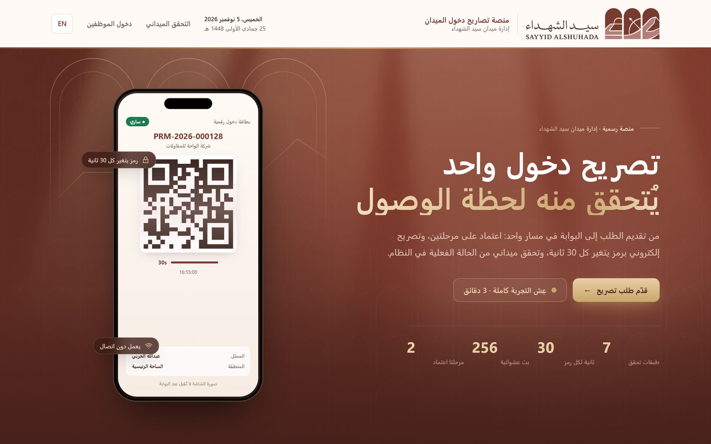
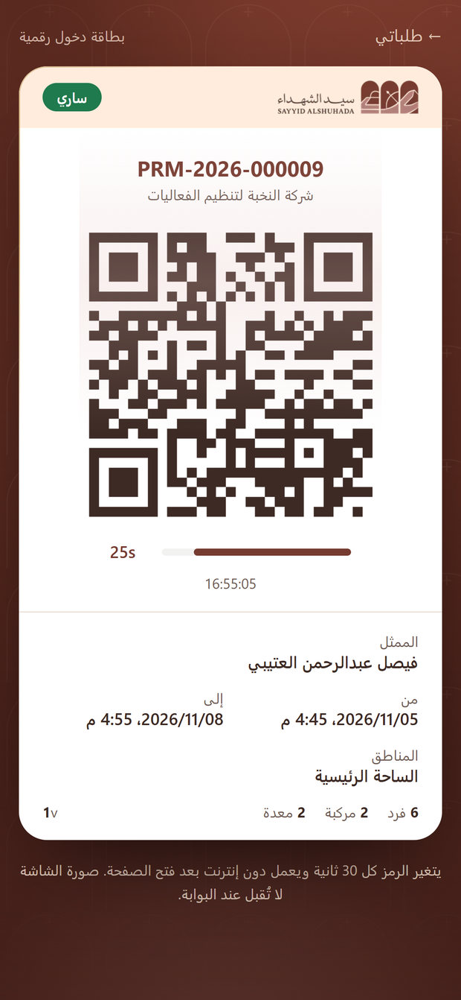
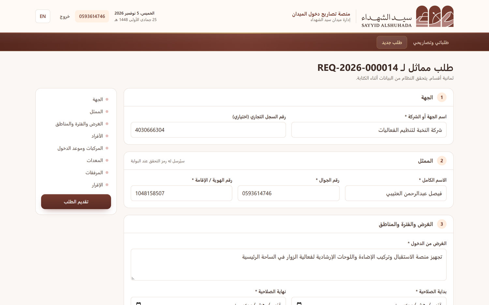
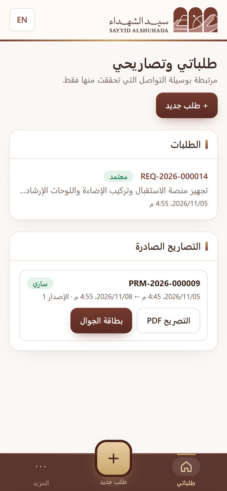
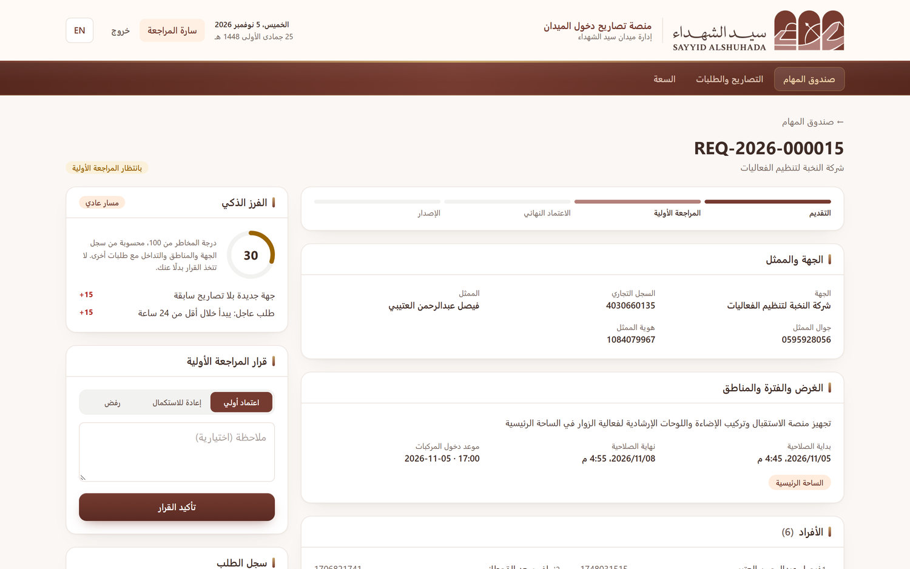
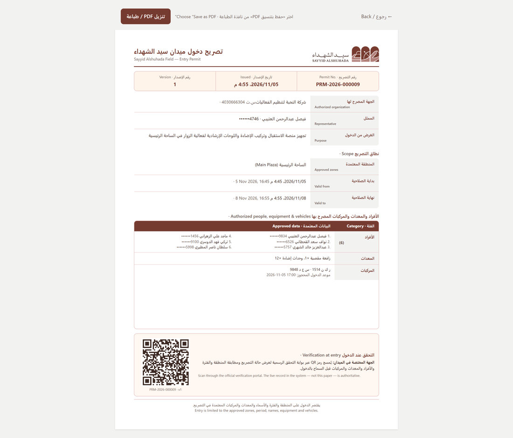
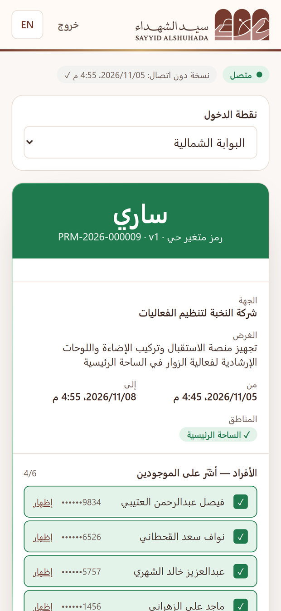
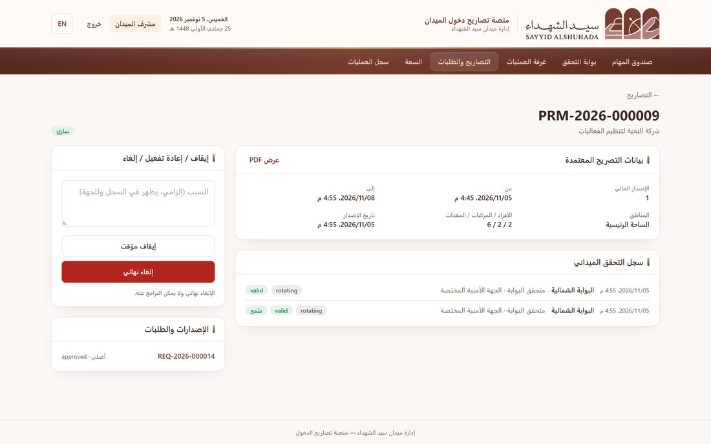
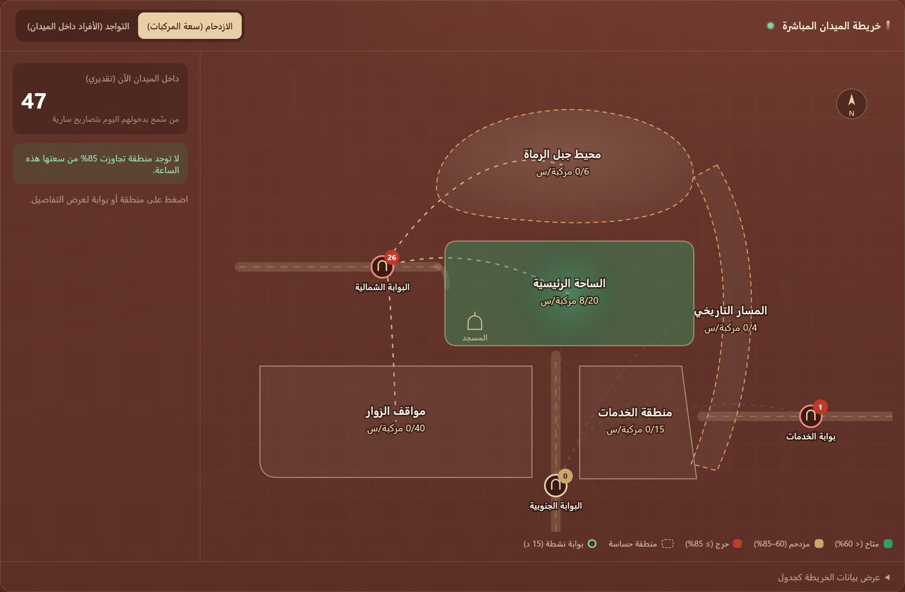
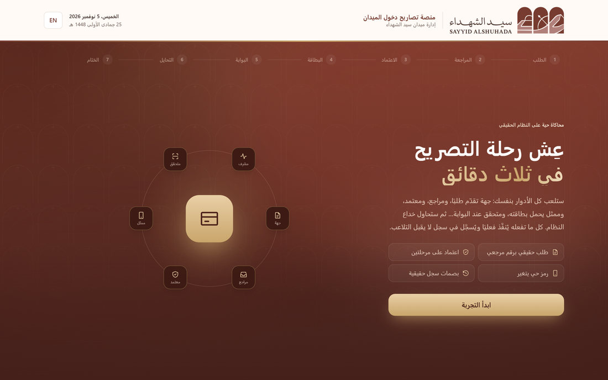

إدارة ميدان سيد الشهداء
تصريح دخول المركبات والأفراد والمعدات من الطلب إلى البوابة في مكان واحد. كل قرار له مسؤول، وكل تصريح يُتحقق منه لحظة الوصول، وكل عملية تُسجّل في سجل لا يُمحى.


المنصة في دقيقة
تحوّل المنصة طلبات الدخول ومراجعتها واعتمادها والتحقق منها عند البوابات إلى دورة إلكترونية واحدة على قاعدة بيانات واحدة؛ يرى كل طرف الحالة نفسها لحظة بلحظة، ولا يرى إلا ما يحتاجه لعمله.
الجهة المتقدمة · تقديم الطلب


إدارة الميدان · المراجعة والاعتماد

الإصدار · التصريح وبطاقة الجوال

الجهات المختصة · التحقق عند البوابة


مشرف الميدان · غرفة العمليات

التحقق ومنع التلاعب
لا يُعد التصريح المطبوع أو رمز QR وحده إثباتًا للدخول؛ القرار يُبنى على طبقات ينفذها المتحقق بالترتيب، وكل محاولة تحايل تُرفض وتظهر في غرفة العمليات.
الصلاحيات والأمان
| الصلاحية | مقدم الطلب | مراجع أولي | معتمد نهائي | مشرف الميدان | متحقق ميداني | مسؤول النظام |
|---|---|---|---|---|---|---|
| تقديم الطلبات ومتابعتها وتنزيل التصريح | ✓ | — | — | — | — | — |
| المراجعة الأولية والاطلاع على المرفقات | — | ✓ | — | — | — | ✓ |
| الاعتماد النهائي والإصدار | — | — | ✓ | — | — | ✓ |
| إيقاف التصاريح وإلغاؤها | — | — | ✓ | ✓ | — | ✓ |
| التحقق الميداني عند البوابة | — | — | — | ✓ | ✓ | ✓ |
| غرفة العمليات وسجل العمليات | — | — | — | ✓ | — | ✓ |
| المستخدمون والأدوار والمناطق والإعدادات | — | — | — | — | — | ✓ |
الخطوة التالية
النموذج يعمل اليوم ببيانات تجريبية كاملة، ويمكن استعراضه في ثلاث دقائق عبر المحاكاة الحية «عِش التجربة» التي يلعب فيها المستخدم كل الأدوار على النظام الحقيقي. نقترح تجربته مع فريق إدارة الميدان ومتحقق من جهة مختصة، ثم نكمل المراحل.
